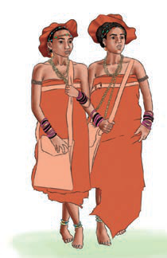
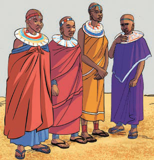
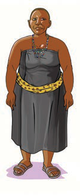
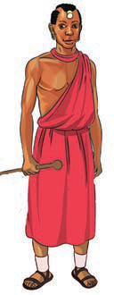
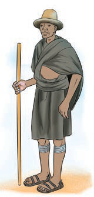
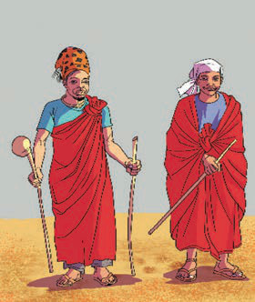

moja na nyingine. Pamoja na tofauti hizo, kulikuwa na mambo yanayofanana katika mavazi yao. Kielelezo namba 3 kinaonesha baadhi ya mavazi ya makabila mbalimbali ya Kitanzania.

Mavazi ya kike ya Wadatoga

Mavazi ya kike ya Waha

Mavazi ya kike ya Wamasai

Vazi la kike la Wagogo

Vazi la kiume la Wamasai

Vazi la kiume la Wasukuma

Mavazi ya kiume ya Wangoni
Kielelezo namba 3: Baadhi ya Mavazi ya jamii za Watanzania
Mavazi ya asili ya Kitanzania yanasisitiza sifa zifuatazo: (a) Mavazi ya heshima yenye kusitiri mwili, yaani mavazi yasiyoonesha maungo;